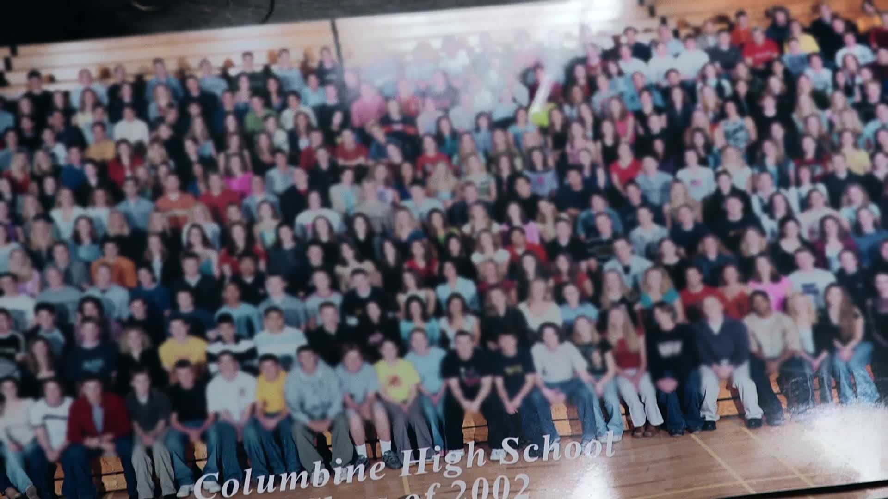
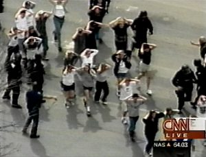
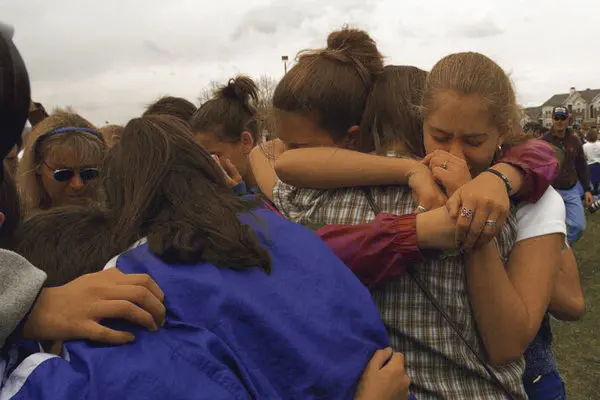
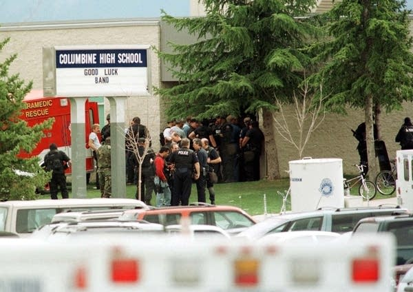
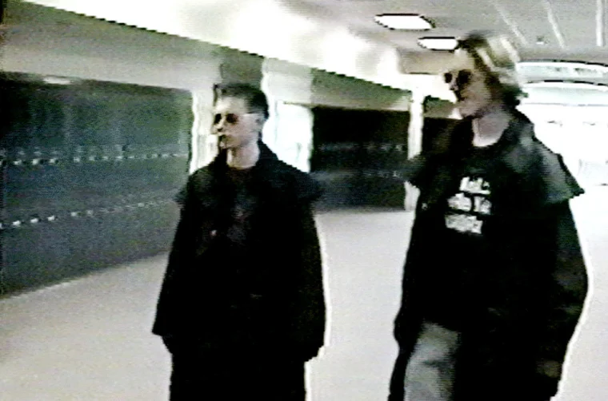
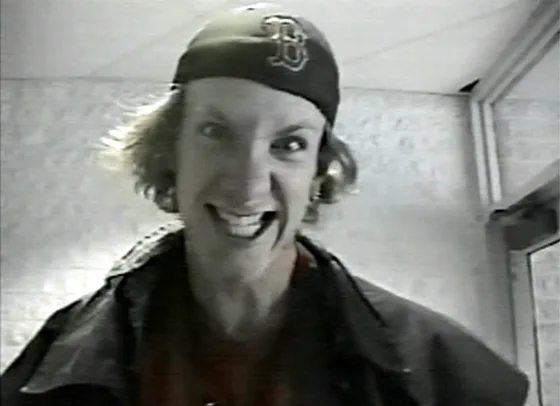

Evidence & Photo Gallery
Sources, Photos & Video
Upload your photos directly into each slot below, and paste YouTube links into the video players. All slots are clearly labelled with the recommended source.

Students Evacuating
Students fleeing Columbine with hands raised, April 20, 1999.
Source: AP / Getty Images

Memorial Crosses
13 crosses on Rebel Hill outside Columbine High School.
Source: AP / Getty Images

NYT Front Page
New York Times, April 21, 1999.
Source: NYT archive / school library database

Denver Post Cover
Denver Post, April 20, 1999 — local vs. national contrast.
Source: Denver Post archive

TIME "Monsters Next Door"
TIME Magazine cover, May 3, 1999.

FBI Final Report (2000)
Cover page of the FBI's official Columbine investigation report.

Columbine High School
Columbine High School, Littleton, Colorado.
Additional Video Evidence
🎬 NBC Nightly News Coverage
NBC Nightly News — April 21, 1999, Tom Brokaw anchoring from Littleton
🎬 Columbine: Minute by Minute
Columbine Shooting: Minute by Minute — Full Film